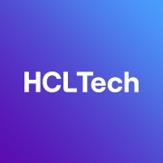
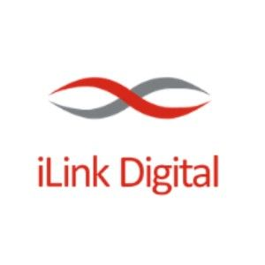

Full-stack SDET with 7+ years owning end-to-end quality across UI, API, and mobile testing, with hands-on AI engineering applied to test generation, QA tooling, and process automation.
Test Engineer
View Full Impact
SDET - 3
View Full Impact
Project

Mar 2025 - Apr 2025Technical Lead
View Full Impact
Project

Jul 2025 - PresentTest Specialist
View Full Impact
Project
Built Retention Rocket, an AI-driven churn prediction prototype at a client-hosted hackathon.
Awarded for JIRA JQL compliance automation that reduced team overhead by 30-50%.
Automated Excel-based metrics improving operational reporting efficiency across teams.
Delivered automation scripts for a new feature achieving UAT sign-off with near-zero defects.
Self-initiated automation on a safety-critical platform, exceeding expectations within the first year.
Ready to build the future of quality together?
Fetch the full technical breakdown:
View Latest Resume